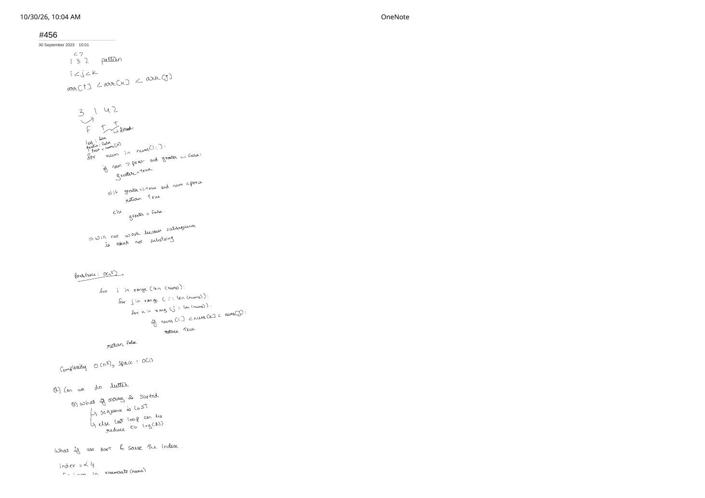
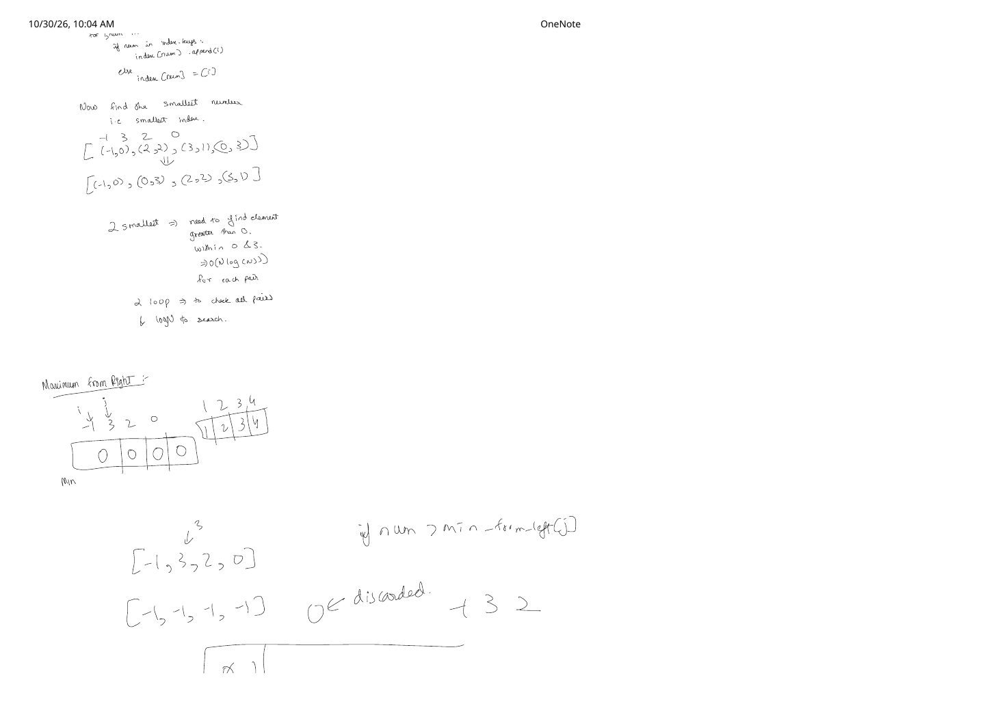
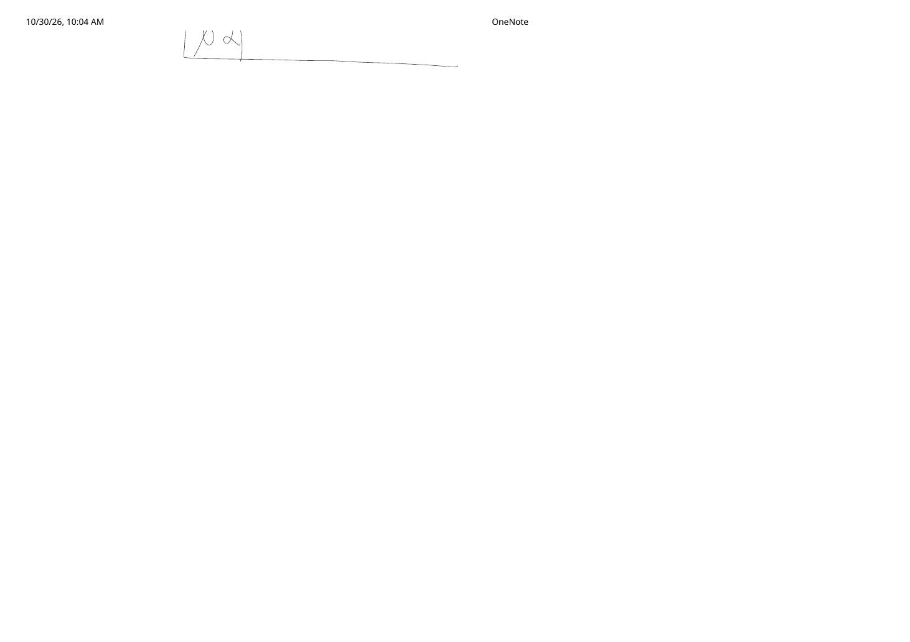

LC 456: 132 Pattern — The Complete $\mathcal{O}(n^3) \to \mathcal{O}(n)$ Monotonic Stack Journey
Expanded from handwritten competitive coding study note: 03_456.pdf (3 pages)
1. Problem Statement & Constraints
Given an array of $n$ integers nums ($1 \le n \le 2 \times 10^5$, $-10^9 \le \text{nums}[i] \le 10^9$), a 132 pattern is a subsequence of three integers $\text{nums}[i], \text{nums}[j], \text{nums}[k]$ such that:
Visually (matching the geometric peak sketch on Page 3 of 03_456.pdf), we want a low valley ('1' at $i$), followed later by a tall peak ('3' at $j$), followed even later by an intermediate value ('2' at $k$) strictly sandwiched between the valley and the peak.
2. Unpacking the 5-Stage Progression Across 03_456.pdf
All three pages of 03_456.pdf document an authentic interview-style refinement from a broken $\mathcal{O}(n)$ hunch to $\mathcal{O}(n^3) \to \mathcal{O}(n^2 \log n) \to \mathcal{O}(n^2) \to \mathcal{O}(n)$:
Attempt 0 (Page 1 Top): Why Adjacent greater Flags Fail
On Page 1, testing [3, 1, 4, 2] with a boolean greater flag that checks num > prev followed immediately by num < prev triggers two fatal flaws:
- As written directly on the scan: "Will not work because subsequence is asked, not substring!" For instance, in
[3, 5, 0, 3, 4], the valid 132 pattern is $(3, 5, 4)$ at indices $(0, 1, 4)$ separated by0, 3. - Even for contiguous triples like
[3, 5, 1],5 > 3followed by1 < 5is a 2–3–1 pattern ($\text{nums}[k] = 1 \lt \text{nums}[i] = 3$), violating $\text{nums}[i] \lt \text{nums}[k]$!
- Stage 1 — Brute Force $\mathcal{O}(n^3)$ Time, $\mathcal{O}(1)$ Space (Page 1 Middle): Check every triple $0 \le i \lt j \lt k \lt n$ and return
trueifnums[i] < nums[k] < nums[j]. Correct, but $n = 2 \times 10^5$ gives $\sim 10^{15}$ iterations. - Stage 2 — Value-Index Sorting Brainstorm $\mathcal{O}(n^2 \log n)$ (Page 1 Bottom & Page 2 Top): Pairing values with indices on
[-1, 3, 2, 0]gives[(-1, 0), (3, 1), (2, 2), (0, 3)]$\xrightarrow{\text{sort}}$[(-1, 0), (0, 3), (2, 2), (3, 1)]. Even if you binary search for an intermediate value in $\mathcal{O}(\log n)$, enumerating index pairs $(i, k)$ still leaves two outer loops ($\mathcal{O}(n^2 \log n)$). - Stage 3 — Prefix Minimum Array $\mathcal{O}(n^2)$ (Page 2 Bottom): Fix peak $j$ and right candidate $k$. Which left element $\text{nums}[i]$ ($i \lt j$) gives $\text{nums}[i] \lt \text{nums}[k]$ the widest possible chance to hold? Always the minimum element in $\text{nums}[0 \dots j-1]$! Precomputing
min_from_left[j](on[-1, 3, 2, 0],min_from_left = [-1, -1, -1, -1]) eliminates the $i$-loop completely in $\mathcal{O}(n^2)$ time (and maintaining right-side elements in a balanced BST /std::setreduces this further to $\mathcal{O}(n \log n)$). - Stage 4 — Optimal Right-to-Left Monotonic Decreasing Stack $\mathcal{O}(n)$ (Page 2 Discard Trace & Page 3): How do we drop the remaining $\log n$ factor? Scan right-to-left ($i = n - 1 \to 0$) while maintaining:
st: a monotonically decreasing stack (top is smallest) of potential peak elements $\text{nums}[j]$ seen to the right.third($\text{nums}[k]$, initialized to $-\infty$): the largest element ever popped fromstbecause some strictly larger peak $\text{nums}[j] \gt \text{nums}[k]$ arrived to its left!
Why Maximizing third ($\text{nums}[k]$) Is Provably Optimal
Whenever incoming nums[i] > st.top(), nums[i] sits to the left of st.top() and is strictly greater—forming a valid (3, 2) pair $(\text{nums}[i], \text{st.top()})$! Popping all smaller stack elements promotes the largest among them into third (notice 0 <- discarded replaced by 2 at the bottom of Page 2!). Because st is monotonically decreasing, each popped value is $\ge$ the previous third, monotonically widening the open acceptance interval $(-\infty, \text{third})$ for all future left valleys $\text{nums}[i']$ ($i' \lt i$)!
3. Step-by-Step Dry Run on nums = [-1, 3, 2, 0]
[-1, 3, 2, 0] from Page 2 of 03_456.pdf: when peak 3 pops 2, third upgrades from 0 to 2, immediately catching -1 < 2 (and it would even catch 1 < 2 on [1, 3, 2, 0], which third = 0 would miss!).4. Clean C++ & Python Implementations
// LC 456: 132 Pattern — Right-to-Left Monotonic Decreasing Stack (O(n) Time, O(n) Space)
#include <climits>
#include <stack>
#include <vector>
using namespace std;
class Solution {
public:
bool find132pattern(vector<int>& nums) {
int n = (int)nums.size();
if (n < 3) return false;
stack<int> st; // Monotone decreasing candidates for peak nums[j]
int third = INT_MIN; // Largest nums[k] that already has a peak nums[j] > third to its left
for (int i = n - 1; i >= 0; --i) {
if (nums[i] < third) {
return true; // nums[i] ('1') < third ('2') < some popped-by peak ('3')
}
while (!st.empty() && nums[i] > st.top()) {
third = st.top();
st.pop();
}
st.push(nums[i]);
}
return false;
}
};from math import inf
class Solution:
def find132pattern(self, nums: list[int]) -> bool:
if len(nums) < 3:
return False
stack: list[int] = []
third = -inf # Best valid nums[k] ('2') backed by a taller peak to its left
for x in reversed(nums):
if x < third:
return True
while stack and x > stack[-1]:
third = stack.pop()
stack.append(x)
return False5. Complexity Proof & Key Edge Cases
- Time Complexity — $\mathcal{O}(n)$ amortized: Every element
nums[i]is pushed ontostonce and popped at most once across the entire loop ($\le 2n$ stack operations total). - Space Complexity — $\mathcal{O}(n)$: In the worst case of a strictly increasing array (e.g.,
[1, 2, 3, 4]scanned right-to-left as4, 3, 2, 1), no pops occur andstholds all $n$ elements. - Key Edge Cases:
- Equal elements do NOT trigger pops (
nums[i] > st.top()is strict!): On[1, 3, 3, 3],3 > 3isfalse, sothirdstaysINT_MIN(equal peaks cannot play'3'and'2'since $\text{nums}[k] \lt \text{nums}[j]$ is strict). nums[i] == INT_MIN($-2^{31}$, while constraint is $\ge -10^9$): Even ifnums[i] == INT_MIN, strict comparisonnums[i] < thirdis safelyfalsewhenthird == INT_MIN(uninitialized), andtrueonce any real element $\gt \text{INT\_MIN}$ becomesthird!- Short arrays ($n = 1, 2$) or monotonic arrays (
[1, 2, 3, 4],[4, 3, 2, 1]): Returnfalsecleanly.
- Equal elements do NOT trigger pops (
From the Handwritten Notes
View original handwritten page 1 — 03_456.pdf (Subsequence vs. substring note, O(n^3) brute force & index map)


03_456.pdf Page 1: Why adjacent greater flags fail ("subsequence is asked not substring"), $\mathcal{O}(n^3)$ triple loop, and value-index map setup.View original handwritten page 2 — 03_456.pdf (Sorted pairs, min_from_left prefix array & [-1, 3, 2, 0] trace)


03_456.pdf Page 2: Sorting [(-1,0),(0,3),(2,2),(3,1)], introducing min_from_left = [-1,-1,-1,-1], and discarding 0 in favor of (3, 2).View original handwritten page 3 — 03_456.pdf (Geometric 1–3–2 peak/valley sketch)


03_456.pdf Page 3: Concluding geometric 1–3–2 slope sketch visualizing the valley-peak-mid relationship.